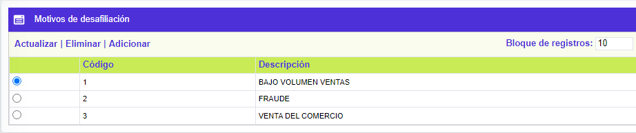
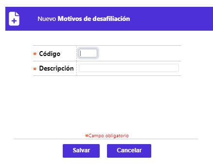

|
Motivos de desafiliación |
Mediante esta función se permite la consulta y mantenimiento de la tabla que contiene la codificación de las diferentes razones o argumentos que ilustran el por qué los establecimientos se desvinculan de una franquicia, bien por decisión voluntaria o por dispocisión de la marca.

El formulario contiene las opciones Actualizar, Eliminar y Adicionar.
Adicionar: Si el usuario invoca la opción Adicionar se despliega un formulario con los siguientes campos:

|
Código |
Campo numérico de 2 posiciones, obligatorio, en el que se registra el código asignado a cada uno de los motivos o razones que justifican o explican la desvinculación de los establecimientos. |
|
Descripción |
En este campo alfanumérico de 30 posiciones, obligatorio, se registra el concepto asociado a cada motivo. |
Actualizar: Si el usuario invoca la opción Actualizar se despliega un nuevo formulario en el cual el único campo modificable es: Descripción.